| 1 |
3711005 |
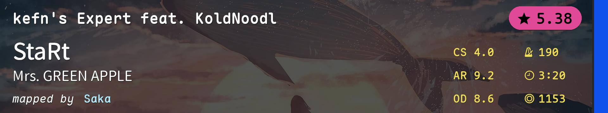 |
NM |
Consistency |
| 2 |
4525964 |
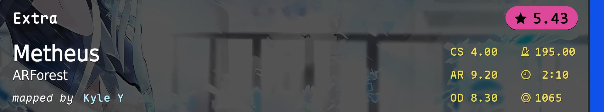 |
NM |
Streams |
| 3 |
3471242 |
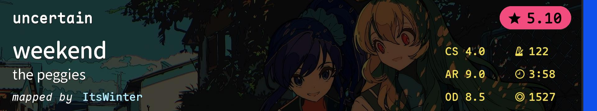 |
NM |
Alt |
| 4 |
4454943 |
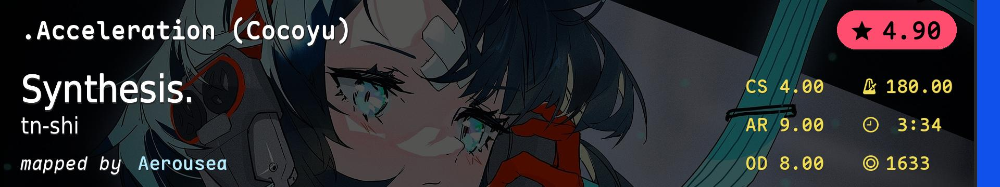 |
NM |
Slider Tech |
| 5 |
4549870 |
![Sydosys - Wandered (bad boy) [nanawo's Expert]](./TT4SF.covers/5-4549870.jpg) |
NM |
Speed, Finger Control, Fast Sliders |
| 6 |
4596894 |
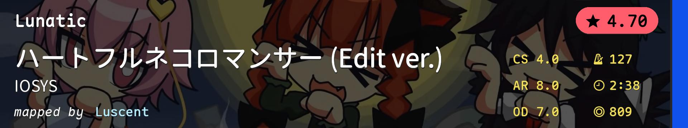 |
NM |
Linear Aim/Finger Control Gimmick |
| 7 |
1882588 |
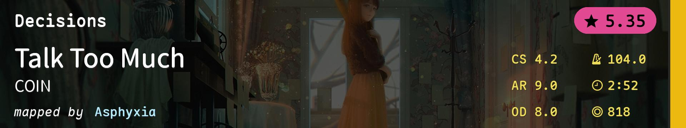 |
HD |
HD Technical Aim |
| 8 |
3936013 |
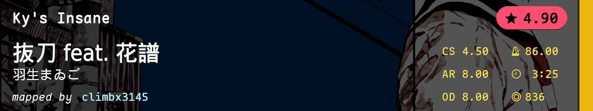 |
HD |
HD AR8 Aim |
| 9 |
3919591 |
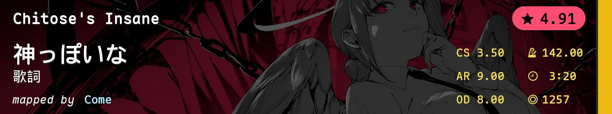 |
HD |
HD Technical Flow |
| 10 |
4082632 |
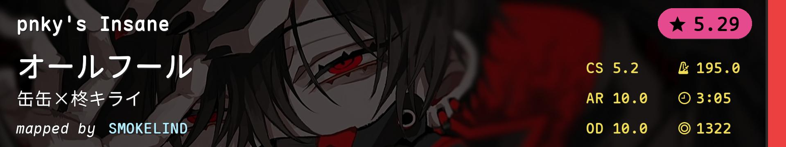 |
HR |
HR Consistency |
| 11 |
4619931 |
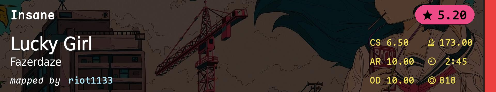 |
HR |
HR Precision Aim |
| 12 |
4570640 |
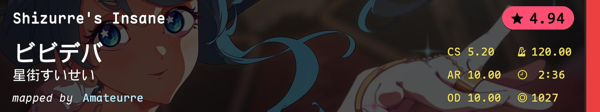 |
HR |
HR Swing Rhythm |
| 13 |
2043200 |
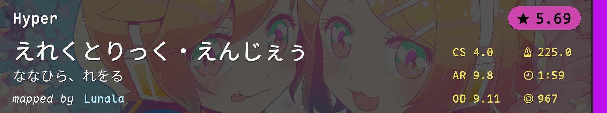 |
DT |
DT Consistency (Yes it's 5.69*s) |
| 14 |
3128033 |
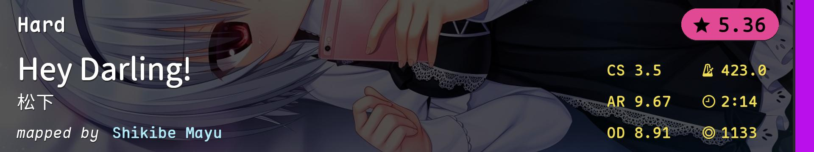 |
DT |
DT Finger Control (Yes it's 423 BPM) |
| 15 |
3748515 |
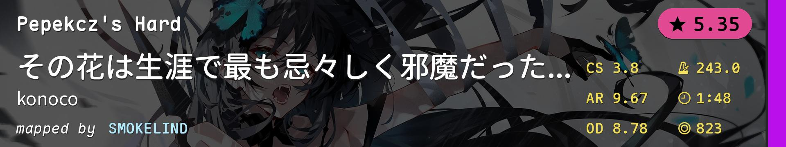 |
DT |
DT Speed (Yes it's slower than DT2) |
| 16 |
72834 |
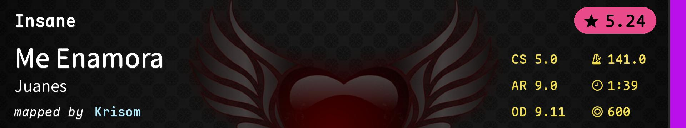 |
DT |
Old Map Gimmick (Yes it's DT4 time) |
| 17 |
4588937 |
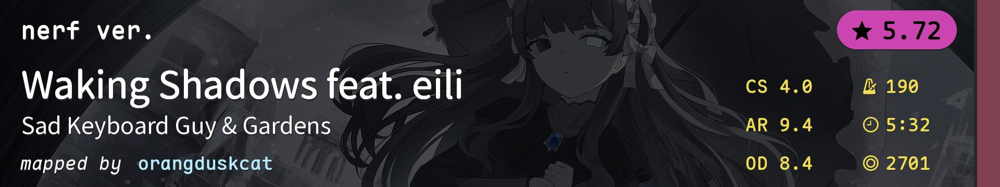 |
TB |
Technical TB |